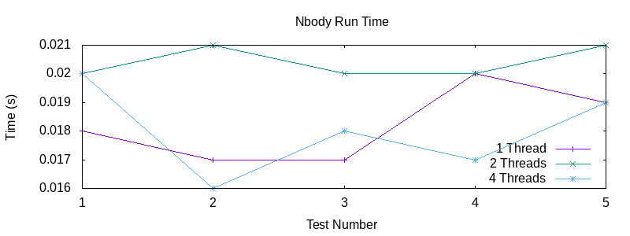
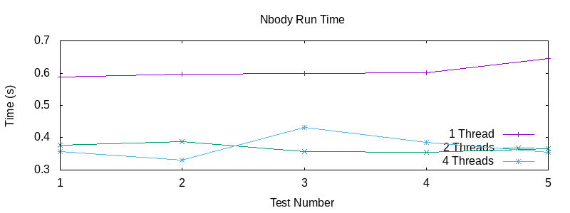
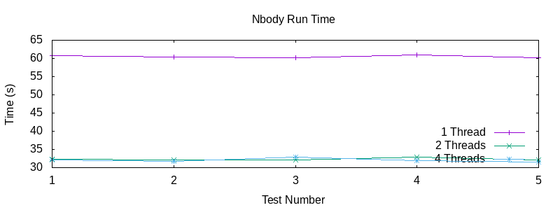
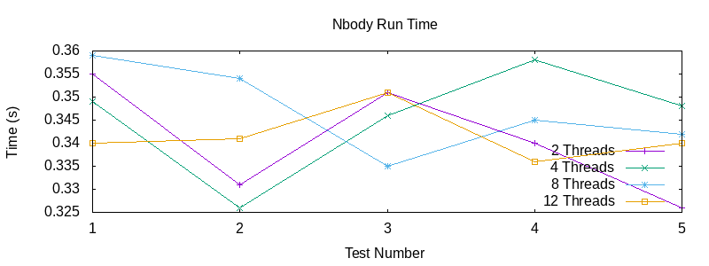

In this project, I create a simulation of orbiting bodies inside a user specified solar system in C. The simulation was multi-threaded using pthread and threads were injected depending on user specifications from the command line. Data for the orbiting bodies could be obtained from a file or from the command line to randomly generate bodies. The simulation was rendered graphically using SDL.
A large focus of this project was optimisation, which was investigated in depth. Included approaches ranged from an analysis of memory with cache optimisation in mind (spatial and temporal locality), flamegraph analysis, a complexity analysis. For an in depth analysis, continue reading.
Throughout the development of the nbody simulation, I have been considering cache optimisation in order to minimise cache misses. In order to do so, I considered the principle of locality with the goal of maximising both temporal and spatial locality.
Some ways I achieved this is by breaking down the physics formulas into the way they could most optimally be achieved. Both energy and step functions would require nested for loops. These stride one loops are examples of spatial locality due to the proximity of these instructions in memory. Furthermore, upon inspection of my initial implementation of step and energy functions, I realised that calls to memory could be minimised as well as temporal locality could be optimised by loading in body i values in the outer loop rather than in the inner loop, requiring n - 1 (where n is the total number of bodies) less load operations per loop.
Another utilisation of temporal locality in the above code is the calculation of ek in the outer loop, which essentially broke the energy calculation down into a left hand side calculated in the outer loop and a right hand side calculated in the inner loop. Once again, this prevents the need to load in all these values an extra n times per outer loop iteration. It can also be noted that the stride one for loop fulfils spatial locality.
Another use of temporal locality was through the repeated use of variables in a loop, so in the below photo s->dt can be seen to be used six times consecutively. This was something I implemented after noticing the frequency of the use of the dt variable. This would likely minimise cache misses of this variable and thus improve memory usage.
In order to investigate the various intricacies of threading in regards to the execution time of the program, a few approaches were taken. These approaches included changing the number of iterations, bodies and threads on the execution time of the command line program. Each was run 5 times in order to negate the variability of the time command in bash.
Test 1: Run with 10 randomly generated bodies over 1000 iterations.
In this test, there did not appear to be much of a difference between threaded and multi-threaded performance, if any. It could be said that the marginally lower performance of the two thread program might be attributed to overhead of creating and joining threads as well as context switching. However, this can quickly be disregarded since the four thread solution outperformed the two thread solution. It is difficult to determine whether this combination of arguments is interesting because it does not distinguish between a threaded and multi threaded solution, or perhaps not interesting because it doesn't allow the simulation to run long enough to distinguish between them.
Test 2: Run with 10 randomly generated bodies over 100,000 iterations.
Test 2 certainly highlighted the difference between single and multi threaded solutions, as opposed to Test 1. This is because this test ran for 100,000 iterations as opposed to 1000, whilst keeping all other arguments the same. The threaded solutions almost performed twice as well as sequential program, which makes sense considering the step function is the only threaded part of the program and also takes up the majority of execution time.
It is also worth noting there did not seem to be much of a difference between two and four threads in the program, with neither outperforming the other. One possible reason for this is that the overhead of creating another two threads and context switching in this instance might negate the benefit of threading more of the step function. Another possibility is there exists some kind of bottleneck in the program preventing threads from achieving better performance from additional work. One last possibility is some false sharing is occurring, which somehow, like in my first hypothesis, negates the benefits of adding further threads to the program.
Test 3: Run with 1000 randomly generated bodies over 1000 iterations.
In Test 2, 1000 iterations were performed on 1000 randomly generated bodies. Immediately, it is clear to see the huge increase in time taken to complete the program. Additionally, it is interesting to note that there is an extremely similarly shape of the graph between Test 2 and Test 3, despite the differing arguments between the two. This strongly indicates a similar improvement in in threading providing benefits for the step function, and yet it seems to plateau at 4 threads.
In order to try and determine the reason for this plateau, one last test was run with 2, 4, 8 and 12 threads to see if any patterns could be spotted:
Test 4: Run with 10 randomly generated bodies over 100,000 iterations.
For Test 4, it was run with 100,000 iterations and 2, 4, 8 and 12 threads. Once again, it is difficult to discern much difference between thread performance here. This leads me to believe that one of two conclusions are possible:
1. The earlier stated idea, that the overhead of creating more threads and context switching in this instance might negate the benefit of threading more of the step function. To extend upon this, this negation is enough to cancel out the cost of overhead and context switching without displaying any added benefit of threading, so the time does not change at all.
2. There is some mistake with my threading logic and there is no additional benefit to be gained from adding past 2 threads.
3. There is a bottleneck preventing improved performance of threads past 2 threads.
4. False sharing is occurring and reducing the performance of extra threads.
Comparing different algorithms and strategies that used. For example I have two different methods of dividing the bodies up among threads for the energy calculation.
Throughout my program, other than the aforementioned approaches to memory optimisation, there were additional strategies employed to improve performance. For example, when creating threads, rather than dividing the number of bodies across the threads and giving all the remainder bodies to one thread, I distributed the remainder bodies evenly across the number of threads specified.
This strategy was designed to maximise the improvement seen by adding additional threads by having threads complete equal amounts of work and finish at the same time.
Another strategy I used was in relation to scaling for the program. Firstly, I realised that scaling was only necessary for the GUI, and so I created a boolean inside my main solar system struct to keep track of whether we were running the GUI or not in order to save time on these extra GUI operations.
In order to scale properly, it was necessary to find the largest x and y values across all the bodies and then scale somewhere coordinates in the GUI. Initially, the approach was to make a function that would find max values separately and then scale just before rendering in the GUI. However, this would require scanning the bodies a few more times than they were already being scanned.
Once I realised this, I found places where I was scanning through the bodies and the optimal place I could place a function for max values, which turned out to be inside the file\_bodies and random\_bodies function (where the bodies are read into structs).
Additionally, I realised I could add a pointer to scaled coordinates to the body struct and calculate the scaled coordinates inside the step function in order to save extra work inside the GUI.
These kinds of more minor optimisations were created throughout the creation of this program, and many more exist, although they are not significant enough to mention. However, the additional ones listed here save many traversals of the bodies in the program each iteration in order to improve program performance.
Code can be provided upon special request.